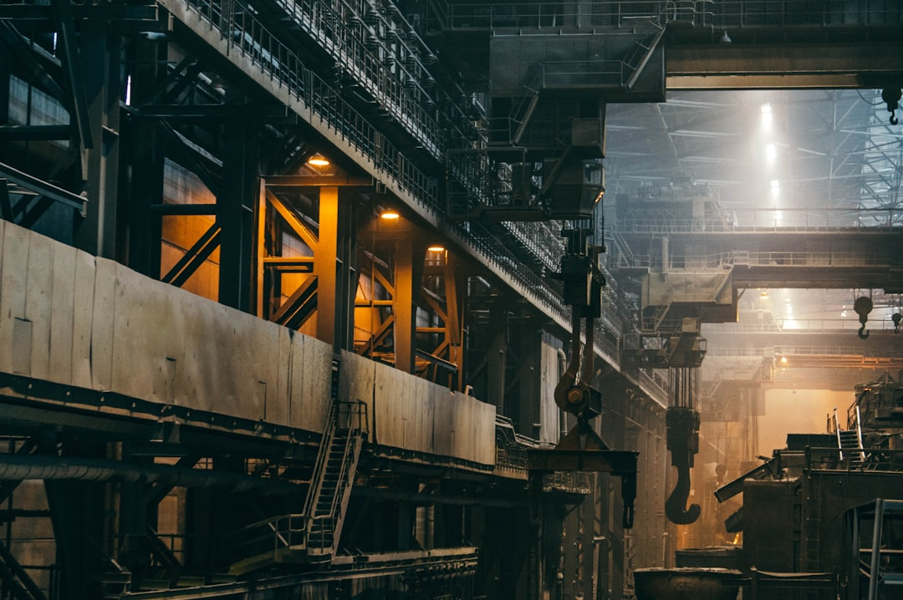

中 갈륨·게르마늄 통제 '분화'…선별 무기화 2단계 진입

중국은 2024년 10월부터 시행한 대일(對日) 갈륨 수출 중단을 2025년 2월 말 전격 재개했다. 재개 시점은 미·일 정상회담 직후로, 외교 협상 카드로 갈륨을 활용했다는 해석이 현장에서 지배적이다. 갈륨 국제 가격은 봉쇄 직전 kg당 약 220달러에서 최고 350달러까지 치솟은 뒤 재개 후 260달러 선으로 부분 조정됐다.
반면 게르마늄은 2023년 8월 수출 허가제 발동 이후 지금까지 실질 수출 허가가 거의 이뤄지지 않고 있다. 광섬유 프리폼·적외선 광학계·태양전지용 게르마늄 기판 수요자들은 18개월 넘게 중국산 조달이 막혀 있다. 국제 게르마늄 가격은 규제 이전 대비 약 3배 수준인 kg당 1,800달러 이상을 유지 중이다.
이번 갈륨 재개가 '선별 통제 2단계'를 알리는 신호탄이라는 점이 핵심이다. 중국은 갈륨을 외교 레버리지로, 게르마늄을 산업 구조 차단용으로 구분 설계하는 이중 전략을 구사하고 있다. 갈륨 수요의 60% 이상이 GaN(질화갈륨) 전력반도체·LED 기판용이어서 가격 변동성이 높고 협상 효과가 빠른 반면, 게르마늄은 광섬유·위성·열화상 카메라 등 대체재 개발에 3~5년이 소요된다.
한국의 갈륨 연간 소비량은 약 30~35t으로 추정되며, 고려아연이 2028년부터 연 15.5t 양산에 나서도 나머지 절반은 여전히 외부 조달에 의존해야 한다. 게르마늄은 고려아연의 아연 제련 부산물 기반 국산화 계획이 진행 중이지만 상업적 규모 생산까지는 2~3년이 더 필요하다.
갈륨 재개가 주는 진짜 메시지는 '중국이 소재 통제를 협상 도구로 정교하게 조율할 능력이 있다'는 사실이다. 수출 재개가 영구적이라는 보장은 없으며, 외교 기류가 바뀌면 다시 잠길 수 있다. 이번 재개로 갈륨 가격이 안정됐다고 방심하는 구매 담당자는 6개월 후 재봉쇄 리스크에 무방비 상태가 된다.
게르마늄 봉쇄 지속은 광통신 인프라 확장과 군수·위성 광학 분야에서 가장 직접적인 타격을 준다. 5G 기지국 증설, 데이터센터 간 광섬유 연결, AI 서버 확장 국면에서 게르마늄 기판 수급이 병목이 되면 전체 인프라 투자 속도가 늦춰진다. 이 구조는 단순 소재 가격 문제가 아니라 디지털 인프라 속도의 문제다.
중국의 이번 전략 분화는 한국에 특히 불리하다. 일본은 갈륨 재개로 일부 숨통이 트인 반면, 한국은 갈륨·게르마늄 양쪽 모두 자체 생산 기반이 고려아연 단일 트랙에 집중돼 있어 공급망 다변화 속도가 느리다.
고려아연: 갈륨·게르마늄 국산화 계획이 동시에 부각되면서 전략적 가치가 높아졌다. 2028년 갈륨 연 15.5t 양산, 게르마늄 부산물 회수 공정 가동 시 국내 유일 복합 전략광물 생산자 지위를 확보한다. 최근 주가는 갈륨 생산 공식화 이후 정책 프리미엄을 반영하기 시작했다.
일본 반도체·GaN 전력소자 업체(TDK, 로옴, 후지전기): 갈륨 재개로 GaN 전력반도체 소재 조달이 4개월 만에 정상화됐다. 재고를 소진하지 않고 버틴 업체들은 재개 후 kg당 80~90달러 낮은 가격에 물량을 확보할 수 있는 기회가 생겼다.
미국·캐나다 게르마늄 생산사(Umicore 캐나다, Indium Corporation): 중국 봉쇄가 지속되는 동안 대체 공급원으로 부상해 수요가 집중되고 있다. Umicore는 2024년 게르마늄 정제 캐파를 확대 발표한 바 있다.
한국 광통신 부품 업체(오이솔루션, 파이버프로 등): 게르마늄 기판 확보가 지속적으로 어려운 상황에서 AI 데이터센터향 광트랜시버 수요가 급증하고 있어 소재 조달 리스크가 생산 일정에 직격한다. 중국산 봉쇄 대비 대체 소싱 비용이 단가의 30~40% 이상 상승한 것으로 현장에서 파악된다.
반도체·디스플레이용 갈륨 수요 기업: 갈륨 재개가 한국이 아닌 일본 수요자 중심으로 이뤄지면서 한국향 물량이 우선 배정된다는 보장이 없다. 중국 수출허가 신청·승인 구조상 한국 업체의 개별 조달은 여전히 심사 불확실성이 높다.
갈륨 구매 담당자는 이번 재개를 '안정화 신호'로 해석하지 말고 재고 버퍼를 최소 3개월 이상 유지해야 한다. 중국의 수출 허가는 언제든 다시 중단될 수 있고, 재개 시점을 사전 예측하기 어렵다는 점이 이미 4개월 봉쇄로 입증됐다.
게르마늄 수요 기업은 지금 당장 캐나다(Umicore), 러시아(Germanium 공급 제한 있으나 간접 경로), 미국 재활용 소재 루트 등 복수 공급원을 동시에 관리하는 '듀얼 소싱' 체계로 전환해야 한다. 단일 소스 의존은 납기 리스크를 기하급수적으로 높인다.
투자자 관점에서는 고려아연의 갈륨·게르마늄 동시 생산 계획이 현실화되는 2027~2028년 전후를 겨냥한 중기 포지션이 유효하다. 다만 생산 스케줄 지연 리스크와 중국이 가격을 의도적으로 낮춰 국산화 사업성을 압박할 가능성을 반드시 시나리오에 포함해야 한다.
실제 조달 현장에서는 — 갈륨 봉쇄 4개월 동안 국내 수요처들이 일본·독일 트레이더를 통한 우회 조달에 나섰고, 이 과정에서 프리미엄이 kg당 40~60달러 추가됐다. 중국이 재개한 뒤에도 우회 루트를 완전히 끊지 않고 유지하는 구매사와, 바로 중국산으로 돌아간 구매사 사이에 향후 재봉쇄 시 리스크 격차가 크게 벌어질 것이다.
이 포스팅은 쿠팡 파트너스 활동의 일환으로 수수료를 제공받습니다.